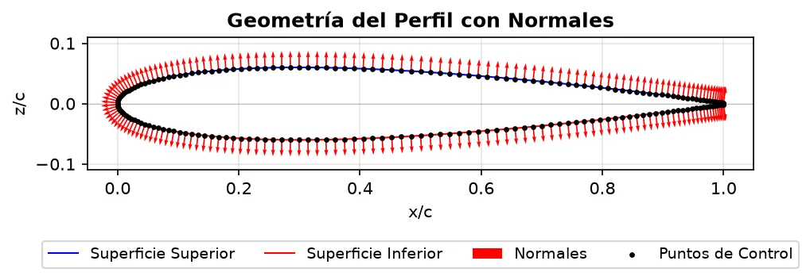
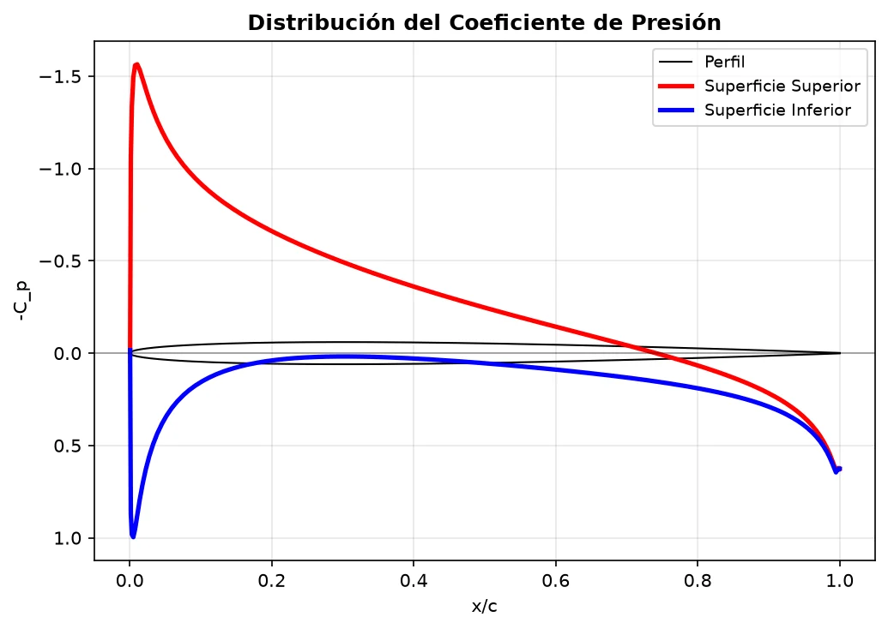
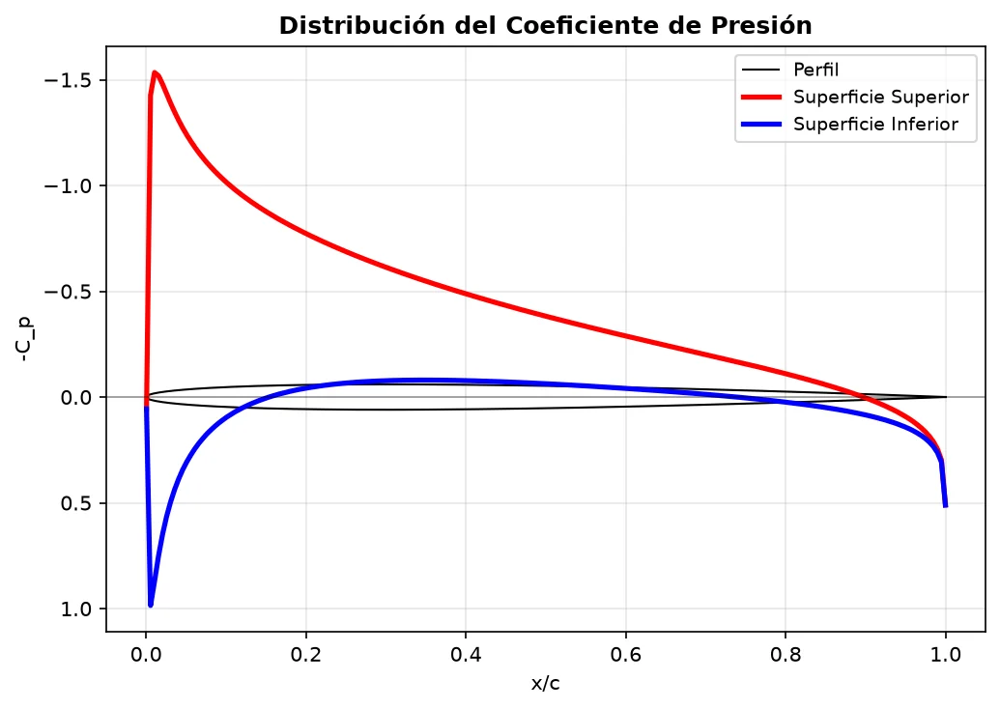
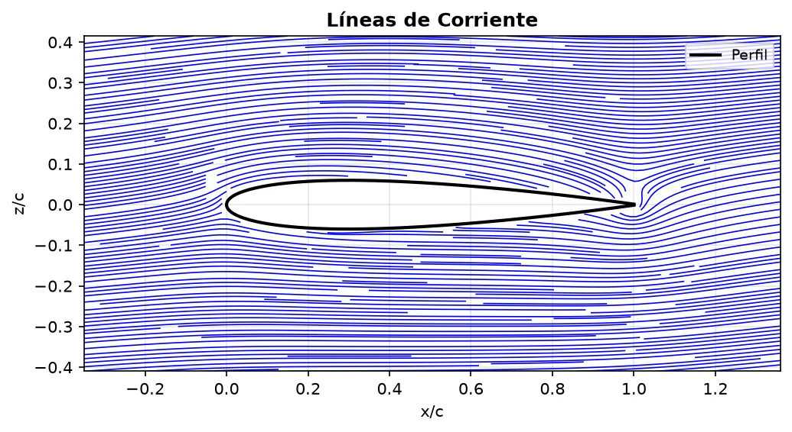
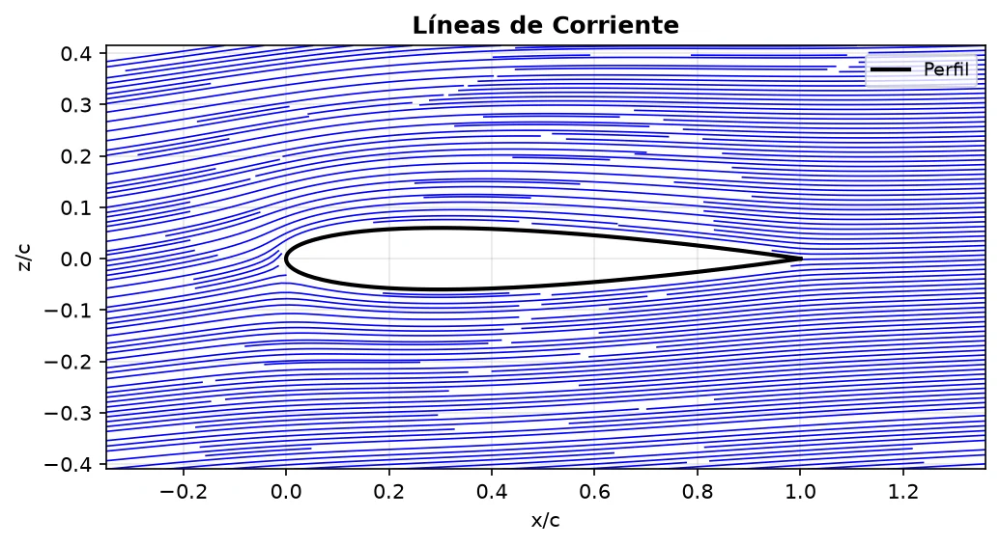

2D panel-method solvers
I contributed to our team's Python source and constant-doublet panel solvers for potential flow around a NACA 0112 airfoil, including pressure and streamline comparisons with XFOIL.
Compare two ways to represent an airfoil boundary
Our team implemented two panel formulations for two-dimensional, incompressible potential flow: distributed sources and constant-strength doublets. We discretised an airfoil contour and solved a linear system to estimate the flow field and aerodynamic quantities.
We used a symmetric NACA 0112 section at a four-degree angle of attack. I completed the work with Mario Barrio Alonso, Juan Ramírez Fernández, and Begoña Santomé Ferragut. My contribution was fundamental, although our report does not assign specific tasks to each person.
Discretise, solve, and inspect the surface quantities
For our constant-doublet formulation, we used a Dirichlet boundary condition and imposed the Kutta condition at the trailing edge. I worked with a 198-panel discretisation, panel influence coefficients, and the solution for singularity strengths used to derive tangential velocity and pressure coefficient distributions.
We compared a separate source-panel formulation under the same geometry and flow condition. Our workflow generated panel normals, control points, pressure plots, and streamline visualisations so that we could inspect the numerical model.
Running both formulations gave me a way to compare how a different singularity model changes the surface solution and the surrounding flow field. I treated the panel geometry and boundary-condition setup as part of the result, because a coefficient is only interpretable alongside the discretisation and assumptions that produced it.
Cp = 1 − (Vt / V∞)²

Use XFOIL as a reference, then reconcile the report
We compared lift coefficient and pressure-coefficient trends with XFOIL. In our results section, the doublet formulation gives CL = 0.432058 and the source formulation gives CL = 0.482297, against an XFOIL reference of 0.4830.
My report contains an inconsistency: its conclusion attributes the source-method value to the developed model, while other sections present the doublet result. I show both values as they appear in the report, not as a verified validation result.




Separate potential-flow results from real drag
Our model does not resolve boundary-layer growth, transition, or flow separation. I therefore do not interpret the doublet formulation's reported CD = 0.028778 as physical airfoil drag.
My next checks would be panel-refinement studies, verification of the Kutta condition and force integration, and a comparison using identical geometry and panel distributions across both formulations and XFOIL.
Validation is part of the solver
Implementing multiple formulations for one test case taught me to compare assumptions, numerical behaviour, and intermediate fields rather than relying on a single headline coefficient.
Next case study: Composite Structures →